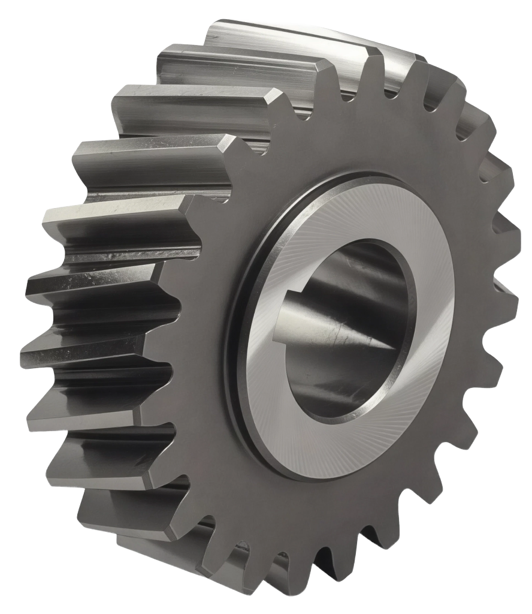
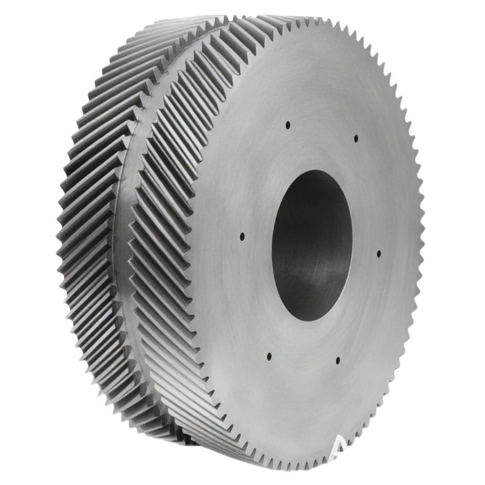
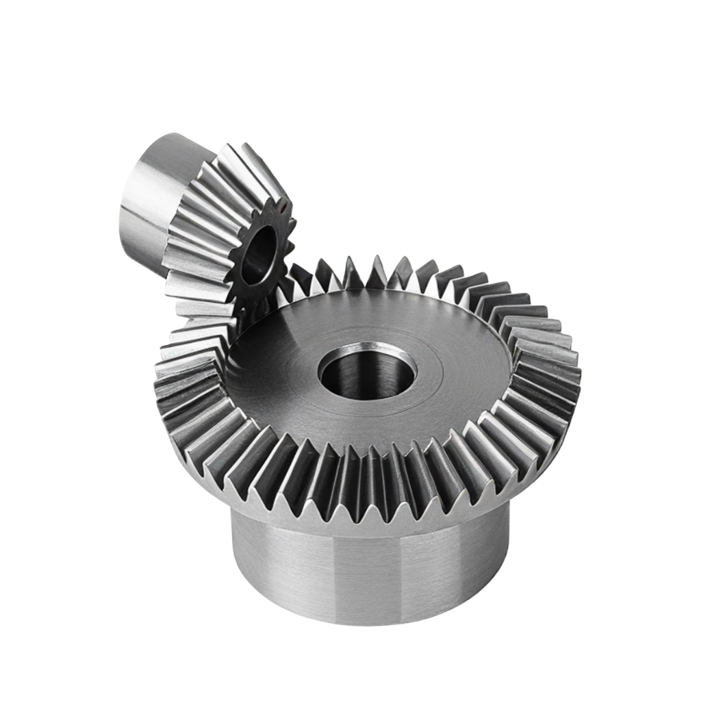
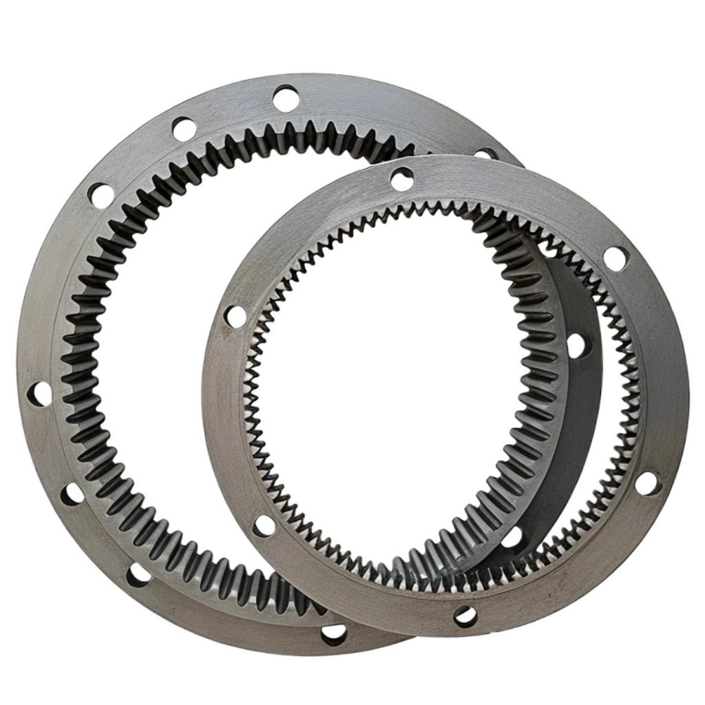

Los engranajes son elementos mecánicos fundamentales para la transmisión de movimiento y potencia entre
ejes en una amplia variedad de máquinas. Su función se basa en el acoplamiento de dientes con geometría
precisa que permiten modificar velocidad, torque y dirección del giro. Gracias a su eficiencia y
confiabilidad, los engranajes se emplean en transmisiones automotrices, maquinaria industrial, equipos de
elevación y sistemas de precisión.
Dentro de la gran familia de engranajes, los engranes cónicos y helicoidales destacan por su capacidad para
trabajar con ejes que pueden ser paralelos, cruzados o intersectarse, manteniendo relaciones de
transmisión específicas y un funcionamiento suave. Su diseño combina criterios geométricos, selección de
materiales, tratamientos térmicos y procesos de manufactura que permiten obtener perfiles de diente con alta
exactitud y vida útil prolongada.
Engranaje recto
Imagen tomada de:
https://brr.mx/wp-content/uploads/2021/01/engranaje-recto-min.jpg

Engranaje helicoidal
Imagen tomada de:
https://i.pinimg.com/564x/ab/31/14/ab311498721121c75dd55a1d28d9c911.jpg

Engranaje en V
Imagen tomada de:
https://meusnier.com.mx/img/engranes/eng_p1_img1.jpg

Engranaje cónico
Imagen tomada de:
https://www.norelem.mx/xs_db/BILD_DB/2/www/750/22430-010130015-Kegelrad-Bevel-gear.jpg

Engranaje con dentado interior
Imagen tomada de:
https://image.made-in-china.com/202f0j00bRJGuqzMACcK/Planetary-Gear-Ring-for-Gearbox-and-Transmission-Box.webp
Contenido
Clasificación general de los engranajes
Por su capacidad para operar bajo cargas elevadas y en condiciones de trabajo exigentes, los engranajes son
ampliamente utilizados en transmisiones automotrices, maquinaria industrial, sistemas de elevación, equipo
minero, maquinaria agrícola y mecanismos de precisión. Su fabricación representa un área clave dentro de la
manufactura mecánica, combinando diseño geométrico, materiales adecuados y procesos de maquinado de alta
exactitud.
Criterio
Tipo de engrane
Características principales
Aplicaciones comunes
Orientación de los ejes
Paralelos
Emplean dientes rectos o helicoidales; transmisión directa sin cambio de dirección.
Transmisiones industriales, cajas de reducción, maquinaria en general.
Perpendiculares (90°)
Utilizan engranes cónicos; permiten modificar la dirección del giro.
Los engranajes cónicos permiten transmitir movimiento entre ejes que se intersectan, por lo general a 90°.
Su superficie primitiva tiene forma de cono truncado, y los dientes se generan sobre esa superficie, lo que
les permite cambiar la dirección del giro sin modificar la continuidad del movimiento.
Geometría fundamental de los engranes cónicos
Superficie primitiva:
Es la superficie teórica sobre la cual se define el contacto geométrico entre los dientes de un par de
engranes. En los engranes cónicos, la superficie primitiva tiene forma de cono y sobre ella se ubican los
parámetros fundamentales como el diámetro primitivo, la línea generatriz y el ángulo primitivo. La
superficie primitiva no es una superficie física del diente, sino una referencia geométrica que permite
establecer la relación de transmisión y la interacción correcta entre los perfiles conjugados.
Imagen tomada de:
https://blogger.googleusercontent.com/img/b/R29vZ2xl/AVvXsEjaU5MphpNEharw0bTocYDG5MOCwCl9Cij3D4C3rneGFHkTXA5KK9Ab9p-BtyVU2ObI7Jn5H__09VwQ7RivQbqes0Cc2UWclEAZuSXbYGMdHqUKtELOHeCelUWxr6Mnc-1h4yLcjuEv9fl/s1600/33.jpg
Ángulo primitivo:
Es el ángulo formado entre el eje del engrane y la generatriz de la superficie primitiva cónica. Este ángulo
determina la inclinación del cono primitivo y, por tanto, la relación entre los diámetros primitivos del
engrane conductor y del engrane conducido.
La relación entre los diámetros primitivos y el ángulo del engrane se obtiene mediante:
\[
\tan(\theta) = \frac{D_2}{D_1}
\]
Donde:
D1: diámetro primitivo del engrane conductor
D2: diámetro primitivo del engrane conducido
\(\theta\): ángulo del cono primitivo
Ejemplo:
Un par de engranes cónicos trabaja entre ejes que se intersectan. El engrane conductor tiene un diámetro
primitivo de \(D_1 = 80 \text{ mm}\) y el engrane conducido tiene \(D_2 = 120 \text{ mm}\). Determine el
ángulo del cono primitivo \(\theta\).
Respuesta: El ángulo del cono primitivo es aproximadamente \(56.31^\circ\).
Engranajes helicoidales
Los engranajes helicoidales se utilizan para transmitir movimiento entre ejes paralelos o ejes cruzados. A
diferencia de los engranes rectos, los dientes de los engranes helicoidales se encuentran inclinados con
respecto al eje de rotación según un ángulo de hélice previamente definido. Esta geometría permite que la
transmisión se realice mediante un contacto progresivo a lo largo del diente, lo que incrementa la
superficie efectiva de interacción y favorece una distribución más uniforme del esfuerzo.
Característica
Descripción técnica
Orientación del eje
Funcionan en ejes paralelos o cruzados.
Ángulo de hélice (\(\beta\))
Define la inclinación del diente. Controla el contacto entre perfiles conjugados y afecta el
módulo normal del engrane.
Contacto entre dientes
El contacto ocurre a lo largo de una línea inclinada, lo que permite que varios dientes
participen simultáneamente.
Geometría de fabricación
El diente se genera mediante un desplazamiento helicoidal coordinado con la rotación del
engrane durante el maquinado.
Geometría fundamental de engranes helicoidales
En engranes helicoidales es necesario distinguir entre dos parámetros esenciales: el paso circular y el paso
helicoidal, ya que ambos describen distancias medidas en diferentes planos del engrane.
Paso circular (P):
Es la distancia medida sobre el círculo primitivo, entre un punto de un diente y el punto correspondiente
del siguiente diente en el plano transversal (plano perpendicular al eje del engrane). Es un parámetro
básico para definir el módulo transversal y la distribución de los dientes alrededor del engrane.
Paso helicoidal (Ph):
Es la distancia axial que recorre un punto del diente al completar una vuelta completa siguiendo la hélice.
Es decir, mide cuánto “avanza” el diente en dirección axial al recorrer un ciclo completo de su trayectoria
helicoidal.
La relación entre ambos pasos está dada por:
\[
P_h = \frac{P}{\cos(\beta)}
\]
Donde:
P: paso circular (plano transversal)
\(\beta\): ángulo de hélice
Ph: paso helicoidal (desplazamiento a lo largo del eje)
Esta relación muestra que el paso helicoidal siempre es mayor que el paso circular para cualquier ángulo de
hélice distinto de cero.
Ejemplo de aplicación:
En una caja de engranes industrial, se requiere fabricar un engrane helicoidal que funcione en un par de
ejes paralelos. El diseño establece un paso circular transversal de \(P = 5 \text{ mm}\) y un ángulo de
hélice de \(\beta = 20^\circ\) con el fin de incrementar la longitud de contacto entre dientes. Para
calibrar la máquina generadora, es necesario determinar el paso helicoidal, ya que este valor define el
desplazamiento del diente a lo largo del eje durante el maquinado. Calcule el paso helicoidal
correspondiente.
Respuesta: El paso helicoidal requerido para ajustar la máquina generadora es
aproximadamente \(5.32 \text{ mm}\).
Métodos de fabricación más utilizados
La fabricación de engranes requiere procesos que permitan generar perfiles precisos y relaciones de
transmisión exactas. Los métodos utilizados dependen del tipo de engrane, la precisión requerida, el volumen
de producción y la disponibilidad de maquinaria. En engranes cónicos y helicoidales se emplean principalmente
procesos de fresado por forma, procesos generadores especializados y rectificado, especialmente cuando se
requieren tolerancias estrechas.
1. Fresado con cabezal divisor
El cabezal divisor es un accesorio de fresadora que permite rotar y posicionar con precisión una
pieza para realizar cortes a ángulos exactos o divisiones iguales.
En este método, el perfil del diente se obtiene mediante una herramienta cuya geometría corresponde al
perfil transversal del diente. Cada diente se corta de manera individual utilizando un cabezal divisor para
posicionar la pieza de acuerdo con el número de dientes requerido.
Características técnicas:
El espaciado se controla mediante división mecánica (relación 40:1 u otras).
Se necesita seleccionar una herramienta con el perfil correspondiente al módulo.
Adecuado para producción baja o fabricación por pieza.
Aplicaciones: engranes cónicos rectos, prototipos, reparaciones y piezas individuales.
2. Maquinado generador para engranes cónicos
Proceso de fabricación donde el perfil del diente se obtiene mediante generación cinemática en una
máquina especializada, coordinando la rotación de la herramienta y la pieza. Este método se usa para
engranes cónicos espirales e hipoides, permitiendo precisión superior respecto al fresado por forma.
Los engranes cónicos espirales e hipoides se fabrican mediante maquinaria especializada que coordina la
rotación de la herramienta y la pieza para generar el perfil de manera cinemática.
Características técnicas:
El perfil se obtiene mediante generación, no por forma directa.
El ángulo de espiral, profundidad del diente y relación de transmisión se controlan mediante el ajuste del cabezal.
Requiere máquinas específicas para engranes cónicos espirales o hipoides.
Aplicaciones: engranes para diferenciales automotrices y transmisiones angulares con requisitos específicos de geometría.
3. Fresado helicoidal sincronizado
Método de maquinado donde la rotación del husillo se sincroniza con el avance longitudinal mediante
un tren de engranes. La herramienta es de forma, pero la hélice se obtiene por la sincronización mecánica,
permitiendo generar dientes helicoidales sin maquinaria generadora compleja.
En este proceso, el diente helicoidal se genera sincronizando la rotación del husillo con el avance
longitudinal mediante un tren de engranes. La herramienta utilizada es una herramienta de forma, pero la
inclinación de la hélice se obtiene mediante la sincronización mecánica.
Características técnicas:
El ángulo de hélice depende del ajuste del tren de engranes.
No requiere maquinaria generadora especializada.
Adecuado para producción baja o talleres de maquinado general.
Aplicaciones: engranes helicoidales de baja producción, prototipos y fabricación bajo pedido.
4. Rectificado de engranes
Proceso de acabado de alta precisión que utiliza discos abrasivos especializadas para corregir errores
de paso, perfil y línea de acción después del corte. Se emplea cuando se requieren tolerancias estrechas
y engranes de alto desempeño conforme a normas AGMA o ISO.
El rectificado se utiliza para engranes que requieren tolerancias estrechas o control de desviaciones de
perfil. Se emplean discos abrasivos con la geometría adecuada al tipo de engrane.
Características técnicas:
Corrige errores residuales del proceso de corte.
Permite alcanzar grados de precisión según normas AGMA o ISO.
Controla problemas como error de paso, error de perfil y error de línea de acción.
Aplicaciones: engranes de transmisiones industriales, cajas automotrices y maquinaria de
alta precisión.
Problemas comunes y soluciones
Durante la fabricación y operación de engranes cónicos y helicoidales pueden presentarse desviaciones
dimensionales, errores de perfil o alteraciones en la interacción entre dientes. Estos problemas afectan la
transmisión de potencia, la distribución de esfuerzos y la vida útil del conjunto. La siguiente tabla resume
los problemas más habituales y sus causas técnicas.
Problema
Causa técnica
Solución recomendada
Desviación de paso
Error en la división durante el fresado o desajuste en la sincronización mecánica del equipo.
Verificar la relación de división; recalibrar el cabezal divisor o el tren de engranes.
Error de perfil del diente
Herramienta desgastada o selección incorrecta del módulo o del cortador.
Sustituir la herramienta; confirmar módulo, ángulo de presión y forma del cortador.
Desajuste en ángulo de hélice
Calibración incorrecta del tren de engranes o error en la programación del generador.
Ajustar la relación cinemática; revisar el ángulo de hélice especificado.
Contacto limitado en engranes helicoidales
Desalineación entre ejes o error en el montaje.
Verificar alineación axial y paralelismo de los ejes; corregir desplazamientos.
Interferencia entre dientes
Variación en profundidad de corte, módulo inadecuado o incorrecto diámetro primitivo.
Ajustar profundidad; revisar módulo y relación geométrica entre engranes.
Patrón de contacto incorrecto en engranes cónicos
Error en ángulo primitivo, desplazamiento del montaje o desajuste en el generador.
Verificar cálculo del ángulo primitivo; ajustar posición axial y lateral del engrane.
Exceso de carga axial en engranes helicoidales
Ángulo de hélice inadecuado para la aplicación o falta de soporte en el eje.
Seleccionar un ángulo compatible con la capacidad del soporte; añadir rodamientos adecuados.
Desgaste prematuro
Lubricación insuficiente o selección incorrecta del lubricante.
Utilizar lubricante con la viscosidad especificada; garantizar suministro constante.
Vibración o irregularidad en transmisión
Excentricidad, descentramiento o error en el montaje del engrane.
Revisar concentricidad; verificar tolerancias de montaje y ajuste en el eje.
Actividades resueltas
Actividad 1. Ajuste geométrico en un par de engranes cónicos
En el sistema de dirección de un vehículo utilitario se utiliza un conjunto de engranes cónicos
espirales para transferir el movimiento del volante hacia el mecanismo de entrada de la caja de
dirección. Durante una inspección de mantenimiento, se sustituyó el engrane conductor por uno nuevo con un
diámetro primitivo de \(D_1 = 75 \text{ mm}\). El engrane conducido permanece sin cambio y
tiene un diámetro primitivo de \(D_2 = 110 \text{ mm}\).
Para verificar que el conjunto mantenga la geometría requerida, se solicita determinar el ángulo
primitivo \(\theta\) correspondiente a estos valores. Dicho ángulo será utilizado para confirmar
la posición de montaje y el ajuste axial dentro del mecanismo.
Calcule el ángulo primitivo \(\theta\) y documente el procedimiento de obtención
empleando la relación geométrica correspondiente.
Solución:
La relación entre los diámetros primitivos y el ángulo primitivo se expresa como:
Respuesta: El ángulo primitivo correspondiente a los diámetros indicados es
aproximadamente 55.7°.
Actividad 2. Determinación del paso helicoidal en una caja reductora
En una caja reductora de velocidad para un transportador industrial, se requiere fabricar
un engrane helicoidal que transmitirá potencia entre ejes paralelos. El diseño establece un
paso circular transversal de \(P = 6 \text{ mm}\) con un ángulo de hélice de
\(\beta = 28^\circ\). Antes del maquinado, es necesario configurar el equipo de fresado
sincronizado para generar la hélice correcta, lo que exige conocer el paso helicoidal real
que recorrerá el diente a lo largo del eje.
Calcule el paso helicoidal \(P_h\) y registre el valor requerido para configurar el
desplazamiento longitudinal del equipo.
La relación entre el paso circular y el paso helicoidal es:
Respuesta: El paso helicoidal requerido para la configuración de la máquina es
aproximadamente 6.80 mm.
Cuestionario
×
Cuestionario
Ejercicio 1. Ángulo primitivo en engranes cónicos de un cabezal angular
Un cabezal angular utilizado en un centro de maquinado emplea un par de engranes cónicos para
desviar el movimiento 90°. El engrane conductor tiene un diámetro primitivo de
72 mm y el engrane conducido 108 mm. Calcule el
ángulo primitivo \(\theta\) necesario para verificar el montaje del conjunto,
usando:
\[
\tan(\theta) = \frac{D_2}{D_1}
\]
Ejercicio 2. Paso helicoidal en una caja de engranes industrial
Una caja reductora para un transportador requiere un engrane helicoidal con
paso circular transversal de 5.5 mm y un ángulo de hélice de
24°. Antes del maquinado, es necesario determinar el
paso helicoidal para ajustar el desplazamiento del carro, usando:
\[
P_h = \frac{P}{\cos(\beta)}
\]
Ejercicio 3. Ángulo primitivo en un mecanismo giratorio
En un sistema de giro utilizado en una máquina clasificadora, se emplea un par de engranes
cónicos para desviar el movimiento del eje principal. El engrane conductor tiene un
diámetro primitivo de 65 mm y el engrane conducido un
diámetro primitivo de 100 mm. Calcule el ángulo primitivo
\(\theta\) correspondiente. Use:
\[
\tan(\theta) = \frac{D_2}{D_1}
\]
Ejercicio 4. Ajuste del ángulo primitivo tras sustitución de engrane
En el sistema de giro de una máquina empacadora, se reemplaza el engrane conductor por uno de
mayor tamaño debido a disponibilidad en inventario. El engrane original tenía
diámetro primitivo de 85 mm, y el nuevo engrane instalado tiene
96 mm. El engrane conducido permanece con 140 mm de diámetro
primitivo. Calcule el nuevo ángulo primitivo \(\theta'\) para ajustar la
posición axial del montaje, utilizando:
\[
\tan(\theta') = \frac{D_2}{D'_1}
\]
Ejercicio 5. Cálculo de paso helicoidal en un sistema automotriz
En una transmisión automotriz se emplea un engrane helicoidal para acoplar el eje primario con
el eje intermedio. El diseño especifica un paso circular transversal de 4.8 mm
y un ángulo de hélice de 30°, valores requeridos para garantizar la correcta
sincronización del par de engranes. Antes del proceso de corte, es necesario determinar el
paso helicoidal, ya que este valor se utiliza para ajustar el desplazamiento
longitudinal en la máquina generadora. Calcule el paso helicoidal \(P_h\)
usando:
\[
P_h = \frac{P}{\cos(\beta)}
\]
Bibliografía
Budynas, R. G., & Nisbett, J. K. (2015).
Diseño en ingeniería mecánica de Shigley (10.ª ed.). McGraw-Hill.
Callister, W. D., & Rethwisch, D. G. (2014).
Materials science and engineering: An introduction (9th ed.). John Wiley & Sons.
DeGarmo, E. P., Black, J. T., & Kohser, R. A. (2012).
Materials and processes in manufacturing (11th ed.). Pearson Educación.
Groover, M. P. (2010).
Fundamentals of modern manufacturing: Materials, processes, and systems (4th ed.). John Wiley & Sons.
Norton, R. L. (2013).
Diseño de máquinas (4.ª ed.). McGraw-Hill.
OpenAI. (2025).
ChatGPT (versión GPT-5.1) [Modelo de lenguaje de IA]. https://chat.openai.com/